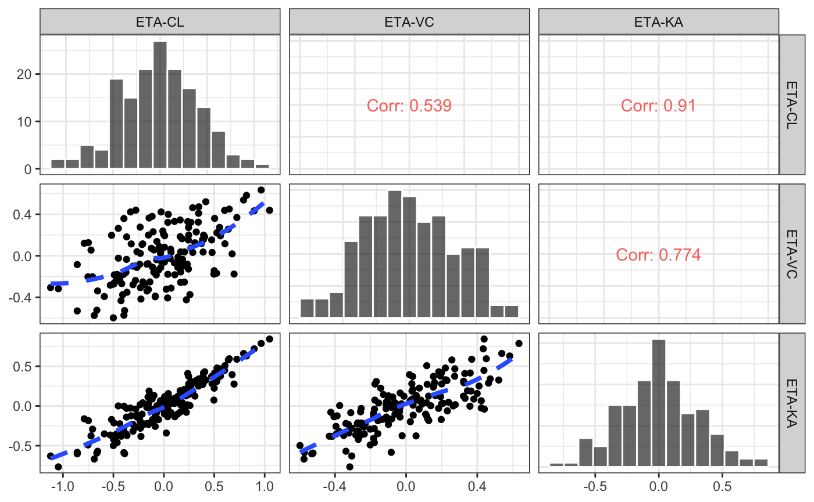

eta.Rmdlibrary(pmplots)
library(dplyr)
data <- pmplots_data_id()A good workflow is to create a character vector of your etas and their names.
etas <- c("ETA1//ETA-CL", "ETA2//ETA-VC", "ETA3//ETA-KA")
etas## [1] "ETA1//ETA-CL" "ETA2//ETA-VC" "ETA3//ETA-KA"Note that very frequently, ETA plots come back as a list of plots, one for each ETA. In our examples, we’ll use the cowplot package to arrange the plots into a grid.
We’ll make a special version of plot_grid that will make the piping a little smoother
library(cowplot)
grid_plot <- function(x) plot_grid(plotlist=x)eta_hist(data,etas) %>% grid_plot()## `stat_bin()` using `bins = 30`. Pick better value with `binwidth`.
## `stat_bin()` using `bins = 30`. Pick better value with `binwidth`.
## `stat_bin()` using `bins = 30`. Pick better value with `binwidth`.